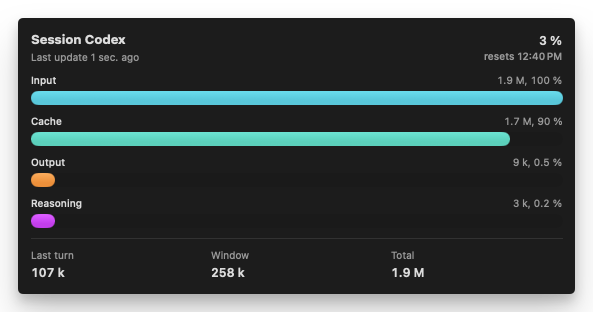
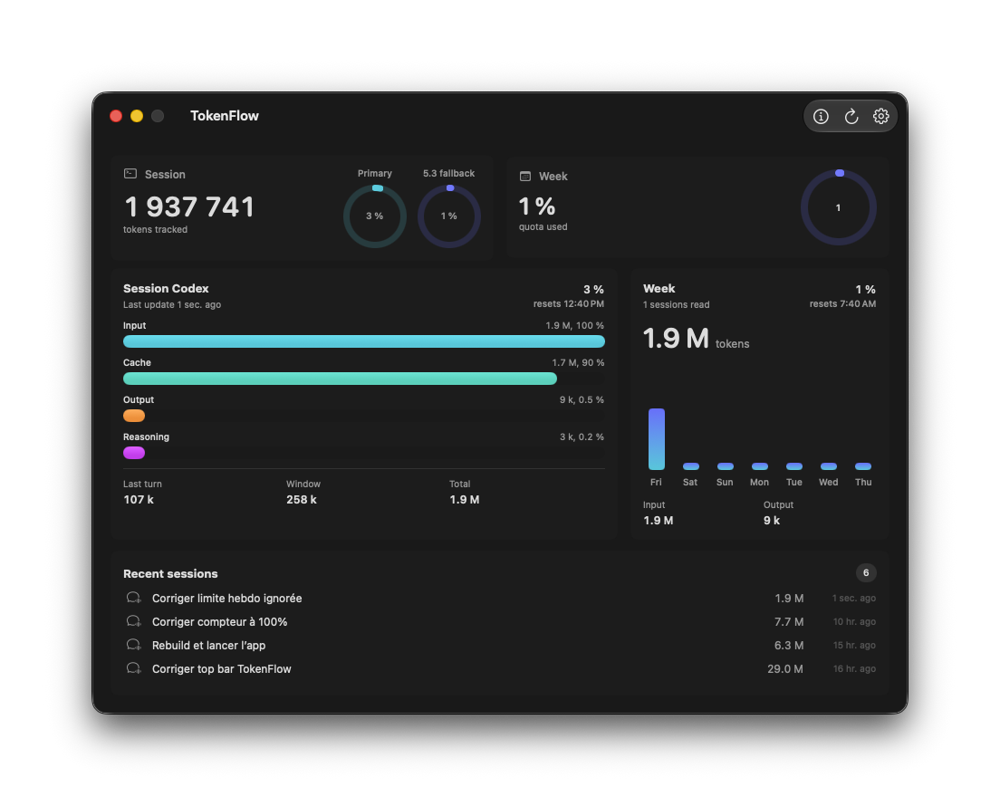
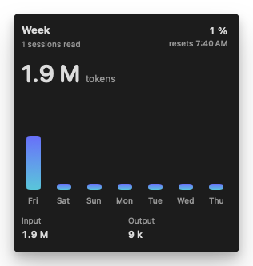
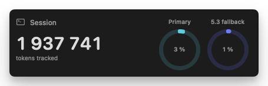
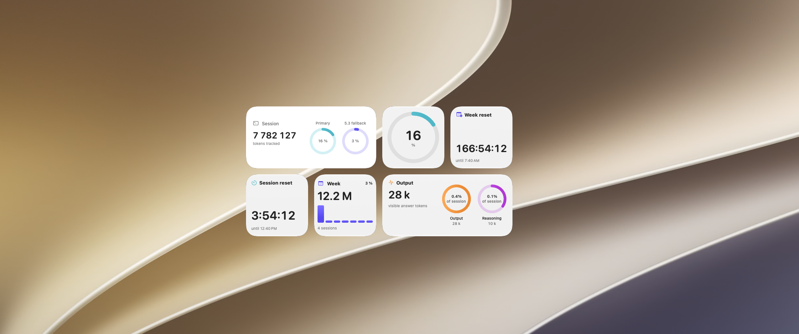
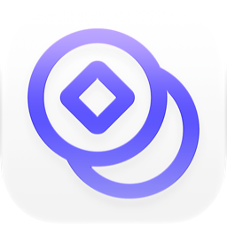

Live session breakdown
Input, cache, output and reasoning tokens for the current session — with the share of total and a live counter that updates as you work.

TokenFlow reads your local Codex history and shows session, weekly and per-category token usage at a glance — a native macOS app with widgets and a menu-bar status item.

Input, cache, output and reasoning tokens for the current session — with the share of total and a live counter that updates as you work.

Track the weekly limit Codex exposes, with daily bars and reset times.

Total tokens tracked plus primary and fallback session limits as rings.

A non-zero value always keeps a visible sliver — so a glance is never empty.
An optional status item keeps usage one glance away, with notifications when you approach a limit.
The latest work threads from your Codex history, with the tokens each one consumed.
Drop a TokenFlow widget into Notification Center to keep session and weekly usage glanceable — without opening the app.

Grab the signed, notarized DMG and drag TokenFlow into Applications.
TokenFlow reads local Codex data, so Codex needs to be signed in on the machine.
Open the app — session, week and recent activity populate automatically.

Free, native, and private. Your history never leaves your Mac.
Download for macOS